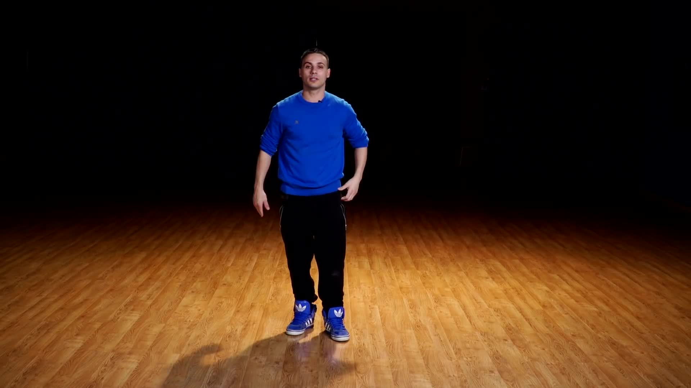

舞蹈學習系統 demo
為了讓你更加了解我們的功能及執行方式，我們釋出這項demo版本。更多功能將在實際軟體中呈現。
在接下來的十來分鐘，你將學到一個舞步：
STEP 1
首先，你得拍一張全身入鏡的自拍照，如同範例。

TAKE A SNAPSHOT
RETRY
DONE
STEP 2
再來，活用慢動作播放功能，仔細觀察範例舞步，試著模仿相同的動作。
Your browser does not support the video tag.
playback speed:
1.00
x
STEP 3
準備好了嗎？準備好就開始錄你的動作吧！盡量讓你的全身都入鏡。
START
STOP
RETRY
DONE
STEP 4
點選評分鍵評分，並邀請你的好友來一同競賽！
evaluate
! Not Available on Phone yet !